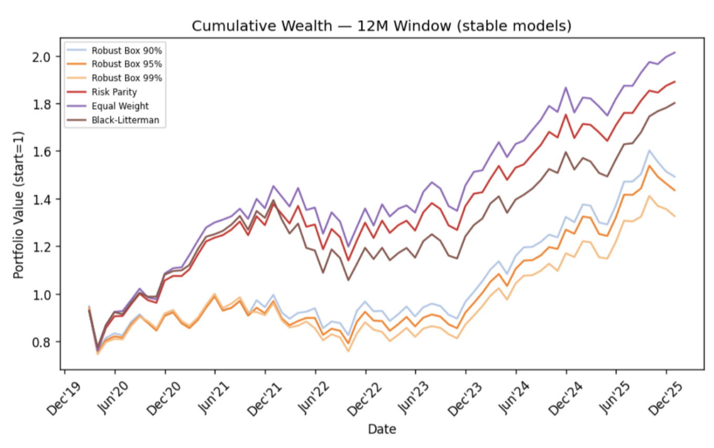
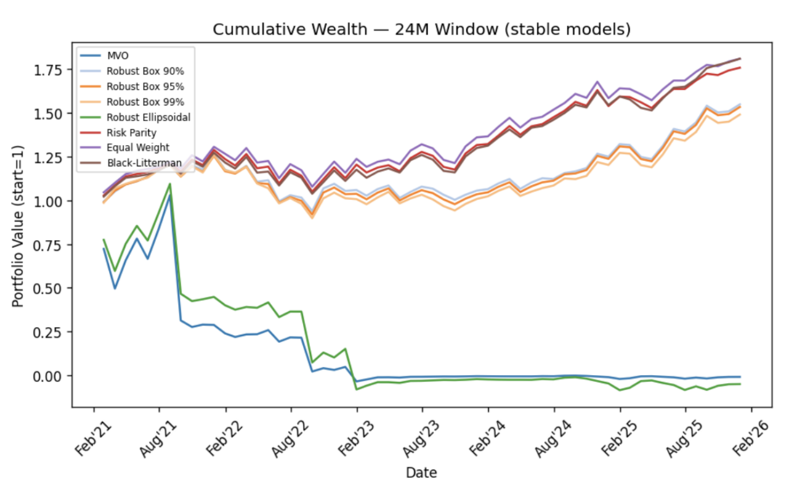
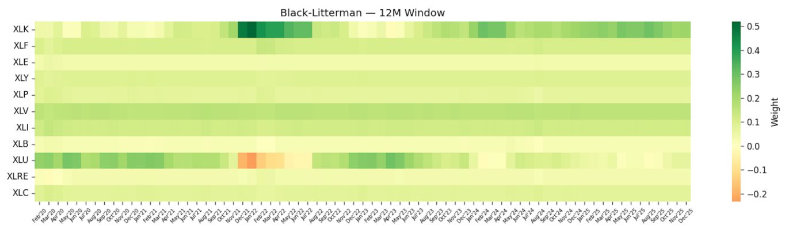

Backtesting Portfolio Construction Strategies on Sector ETFs

Overview
Compared six portfolio construction methods on the eleven S&P 500 sector ETFs to see which ones hold up out-of-sample once real trading costs are included. Each strategy was rebalanced monthly in a rolling-horizon backtest from 2019 to 2025, using 6, 12, and 24 months of history to estimate its inputs.
What I did
- Built monthly total-return data for the eleven sector ETFs (XLK, XLF, XLE, XLY, XLP, XLV, XLI, XLB, XLU, XLRE, XLC) from 1,787 days of adjusted prices.
- Implemented six strategies: mean-variance optimization (MVO), robust MVO with box uncertainty (90%, 95%, 99%) and ellipsoidal uncertainty, Risk Parity, Equal Weight, and Black-Litterman.
- Ran rolling-horizon backtests with 6, 12, and 24-month estimation windows, strictly avoiding look-ahead bias.
- Charged 10 basis points per dollar traded on every rebalance and measured each strategy's turnover and the Sharpe ratio it lost to costs.
- Compared strategies on net Sharpe and Sortino ratios, maximum drawdown, total return, rolling Sharpe, and portfolio weight heatmaps.
Results
- Simple strategies won. Equal Weight and Risk Parity delivered the best and most consistent net Sharpe ratios across all three windows. With a 12-month window, Equal Weight grew $1 to $2.01.
- Standard MVO broke down. Noisy return estimates made its weights swing wildly each month. Trading costs turned its slightly positive Sharpe ratio (0.065) negative (-0.016).
- Robustness helped, when done right. The box-uncertainty penalty stabilized MVO, lifting net Sharpe to 0.127 at the 12-month window. The ellipsoidal version did not.
- Black-Litterman stayed stable. Anchored to market equilibrium, it matched Equal Weight at the 24-month window (Sharpe 0.273 vs. 0.270) while still expressing an investor's views.

Cumulative wealth with a 24-month window. MVO and Robust Ellipsoidal collapse after trading costs, while Equal Weight, Black-Litterman, and Risk Parity grow steadily.

Black-Litterman weights over time (12-month window): stable allocations with a tilt toward Technology (XLK) and away from Utilities (XLU).
Tools
Python, Jupyter, portfolio optimization, robust optimization, Black-Litterman, backtesting